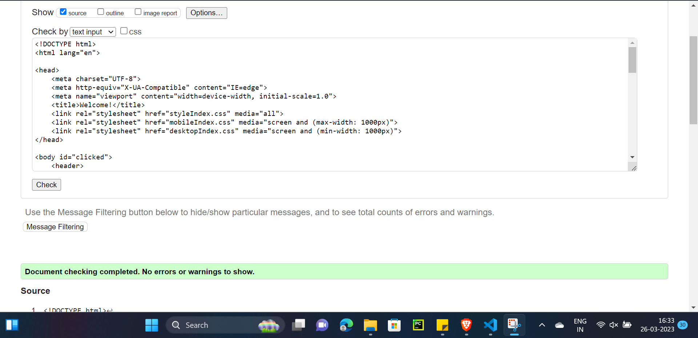
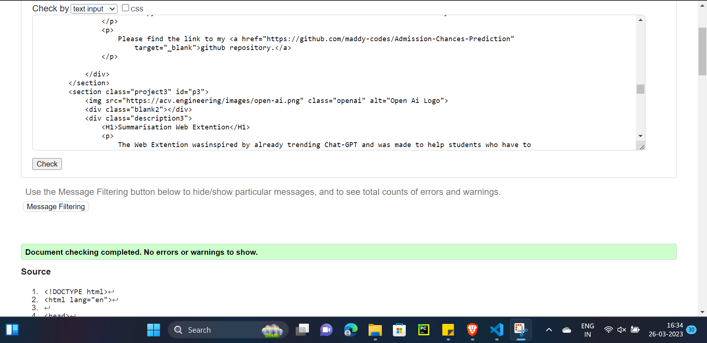
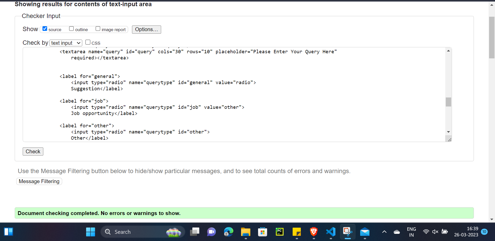
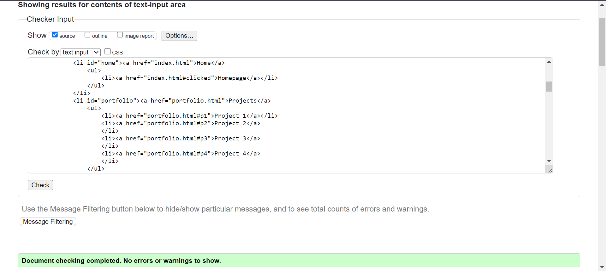

Reflection
In this project we were given a task to make our own portfolio website, the website was divided into 5 webpages which include the Home page, a Projects page, a contact page, a Work Experience page, and ultimately the site report page, in which this report will be added. This was a particularly insightful project as it not only forces us to understand the topic/application of HTML and CSS it also helped us to dig deeper into our own skillset and what we have achieved and what we want to become. This project not only makes my understanding of HTML and CSS stronger, but it also makes a good project to show on my CV and this can be easily converted into our real website.
This paragraph will discuss the strategy which I used to tackle this project in the most appropriate and efficient way, since our formal classes were spread out through the months, I developed this website slowly along with the speed of class material. I first looked through a few good examples of other developers’ portfolio websites and then I picked the one I like the most, then I made a few wireframes and modified the website I was inspired by, then I focused on the index page, which laid the foundation of my website, I had a vertical navigation bar, a header up-top, an aside bar containing my picture, a main area containing brief about me and finally a footer, containing important social media links, each page is supported by 3 CSS sheets, one for mobile, one for desktop and one for common layout. Other pages of my website had a similar format, which was a navigation bar up top, then a header, and different sections divided for different information. Then I made the CSS files for mobile to make the website responsive and saved my progress using GitHub by doing regular commits over a period. While changing the layout I made a branch to first test out the design before merging it into the main branch. The use of GitHub particularly made my work much more organized as well as traceable also, much more controllable. Leaving no space for any kind of data loss or work loss.
Progression
Index


Portfolio


Contact


Validation
HTML
Index
Portfolio
Contact
Experience
CSS (Combined => Main + Desktop + Mobile)
Index